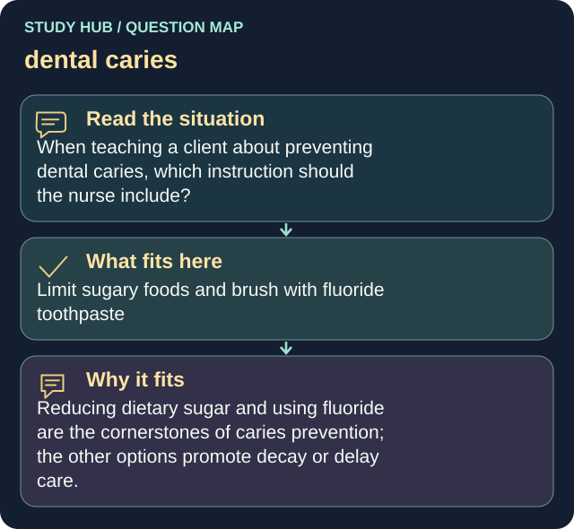

When teaching a client about preventing dental caries, which instruction should the nurse include?
Answer
Limit sugary foods and brush with fluoride toothpaste
Reasoning
Reducing dietary sugar and using fluoride are the cornerstones of caries prevention; the other options promote decay or delay care.
Why the other answers do not fit
- Rinse with a sugar-sweetened mouthwash daily
- Brush only once weekly to avoid enamel wear
- Avoid dental checkups unless pain occurs
Shared reasoning for choices without a separate note: Reducing dietary sugar and using fluoride are the cornerstones of caries prevention; the other options promote decay or delay care.
